Bauta
Your agent wears a mask.
Bauta is a small proxy that runs on your computer, between your coding agent and the model. Your keys and personal details stay on your machine, and when your provider says you’ve hit the limit, your agent keeps going on a private model.
Your provider sees the work, not the keys
Coding agents read everything they can reach: your .env, your config, the client email you pasted in. Bauta reads each request first. It swaps anything that looks like a secret for a placeholder, sends the masked version on, and puts the real values back when the answer comes in.
-

Masked on your machine
API keys, tokens, database passwords, emails, phone and card numbers become placeholders like
[[BAUTA_SECRET_1]]. The same value always gets the same one.[[BAUTA_SECRET_1]] · [[BAUTA_EMAIL_1]]
-
Sent to your provider
The masked request goes to Anthropic, or to OpenAI if you set it up, with your own login passed straight through. Bauta never needs those keys.
Claude Code · OpenAI-compatible tools
-
Venice when you hit a limit
On a 429, a 529 or a server error, the same masked request goes to a private model on Venice, and your agent carries on.
deepseek-v4-1-flash by default
-
Restored on the way back
As the answer streams in, Bauta puts the real values back, tool calls included, so a config file your agent writes has the real key.
the vault lives in memory
Never stuck at a limit
When your provider runs out or falls over, Bauta sends the same masked request to Venice and translates between Anthropic’s format and OpenAI’s on the way, tool calls and streaming included. To your agent it’s just another answer.
Venice says it keeps no prompts or responses. If you’d rather Bauta sent nothing to Anthropic, private mode sends every model request to Venice. You only need a Venice key for this part. Masking works without one.
Try it on a fake .env
This box runs Bauta’s own scanner right here in the page. Change a value and watch what your provider would get instead. Nothing leaves your browser.
Two lines to start
You need Node.js 18.17 or newer. Start Bauta in one terminal, then Claude Code through it in another.
Windows PowerShell
1Start Bauta
$env:VENICE_API_KEY="your-venice-key"; npx github:usebauta/bauta2Then Claude Code, in a second terminal
$env:ANTHROPIC_BASE_URL="http://127.0.0.1:8787"; claudemacOS / Linux
1Start Bauta
VENICE_API_KEY=your-venice-key npx github:usebauta/bauta2Then Claude Code, in a second terminal
ANTHROPIC_BASE_URL=http://127.0.0.1:8787 claudeThen open http://127.0.0.1:8787 to watch requests go by. Other agents on your computer, like Cline or aider, connect as an OpenAI-compatible tool at http://127.0.0.1:8787/v1.
Questions
Which agents does it work with?
Claude Code, and anything on your computer that speaks the OpenAI chat format: Cline, aider, Continue and others. Cursor calls models from its own servers, so it can’t go through Bauta.
What exactly gets masked?
Keys from OpenAI, Anthropic, Google, Stripe, AWS, GitHub and Slack, JWTs and Bearer tokens, private key blocks, passwords in database URLs, .env values named like *_SECRET or *_TOKEN, wallet seed phrases and private keys. Also emails, international phone numbers, card numbers that pass the Luhn check, and any names you list in BAUTA_TERMS.
Is anything stored or sent anywhere else?
No. Bauta listens only on 127.0.0.1, keeps no content logs, sends no telemetry, and the secret vault lives in memory until you stop it. Your Anthropic or OpenAI login goes only to that provider, never to Venice.
What happens when I hit a limit?
On a 429, 500, 502, 503, 504 or 529, or when the provider can’t be reached, Bauta sends the same masked request to Venice. The log line marks it as a fallback.
Do I need a Venice key?
Only for the fallback and private mode. Masking works without one. Bauta reads the key from your environment, never from a file.
What doesn’t it protect against?
Secrets in formats it doesn’t recognize, until you add them as terms. Anything your agent does outside Bauta, like running shell commands. And tasks that need a secret’s real value, because the model only ever sees the placeholder. Run bauta scan on a file to see what it catches.
Is there a Bauta token?
No. Bauta is a free, MIT-licensed program with no token of its own.